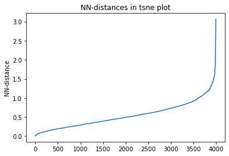

# !jupyter-nbextension enable nglview --py --sys-prefix
# analysis notebook
# methods are cMD, aMD, GaMD.
# in snakemake rule, method needs to be passed as a parameter. s.t. it is accessible via: snakemake.params.method
import matplotlib
#%matplotlib inline
#matplotlib.use("Agg")
import mdtraj as md
import numpy as np
import matplotlib.pyplot as plt
import scipy.cluster.hierarchy
from scipy.spatial.distance import squareform
import pandas as pd
sys.path.append(os.getcwd())
import src
from src.noe import compute_NOE_mdtraj, plot_NOE
from src.pca import make_PCA, plot_PCA, getDih
from src.pyreweight import reweight
from src.analyse import getOmega, getDihedrals
from src.utils import json_load, pickle_dump
from sklearn.decomposition import PCA
from sklearn.manifold import TSNE
from sklearn.cluster import DBSCAN
from sklearn.neighbors import NearestNeighbors
import nglview as nv
# to make prelim. analysis faster. for production, use 1
#stride = int(snakemake.config['stride'])
stride = 1
compound_index = int(snakemake.wildcards.compound_dir)
# only load protein
topo = md.load_frame(snakemake.input.traj, 0, top=snakemake.input.top)
protein = topo.topology.select('protein')
protein
array([ 0, 1, 2, 3, 4, 5, 6, 7, 8, 9, 10, 11, 12, 13, 14, 15, 16,
17, 18, 19, 20, 21, 22, 23, 24, 25, 26, 27, 28, 29, 30, 31, 32, 33,
34, 35, 36, 37, 38, 39, 40, 41, 42, 43, 44, 45, 46, 47, 48, 49, 50,
51, 52, 53, 54, 55, 56, 57, 58, 59, 60, 61, 62, 63, 64, 65, 66, 67,
68, 69])
t = md.load(snakemake.input.traj, top=snakemake.input.top, atom_indices=protein, stride=stride) # added strideint for GaMD 2k
print(t)
# Remove solvent from trajectory
t = t.restrict_atoms(t.topology.select('protein'))
t = t.superpose(t, 0)
<mdtraj.Trajectory with 526000 frames, 70 atoms, 5 residues, and unitcells>
# for GaMD, skip equlibration...
if snakemake.params.method == "GaMD":
t = t[int(26000/stride):] #added 13000 instead of 26000 for 2k
t
<mdtraj.Trajectory with 500000 frames, 70 atoms, 5 residues, and unitcells at 0x7f6ef6983fd0>
# %matplotlib notebook
# v = nv.show_mdtraj(t)
# v.clear()
# v.add_ball_and_stick()
# # Load NOE data
# NOE = src.noe.read_NOE(snakemake.input.noe)
# NOE_number = 1
# a1 = eval(NOE['Atom 1'][NOE_number])
# a2 = eval(NOE['Atom 2'][NOE_number])
# NOE_pairs = []
# for a in a1:
# for b in a2:
# NOE_pairs.append([a,b])
# v.add_representation('distance', atom_pair=NOE_pairs, label_color='black', color='red')
compound = json_load(snakemake.input.parm)
multi = compound.multi
multi
if multi is not None:
multi = {v: k for k, v in multi.items()}
multiple = True
distinction = compound.distinction
print("Multiple compounds detected")
else:
multiple = False
pickle_dump(snakemake.output.multiple, multiple)
if multiple: # if Compound.cistrans:
ca_c = t.top.select(f"resid {distinction[0]} and name CA C")
n_ca_next = t.top.select(f"resid {distinction[1]} and name N CA")
omega = np.append(ca_c, n_ca_next)
t_omega_rad = md.compute_dihedrals(t, [omega])
t_omega_deg = np.abs(np.degrees(t_omega_rad))
plt.plot(t_omega_deg)
plt.hlines(90, 0, t.n_frames, color='red')
plt.xlabel('Frames')
plt.ylabel('Omega 0-1 [°]')
plt.title(f"Dihedral angle over time. Compound {compound_index}")
cis = np.where(t_omega_deg <= 90)[0]
trans = np.where(t_omega_deg > 90)[0]
pickle_dump(snakemake.output.multiple, (cis,trans))
#t[trans]
omega = getOmega(t)
omega_deg = np.abs(np.degrees(omega))
plt.plot(omega_deg)
plt.title(f"Omega angles over time. Compound {compound_index}")
Text(0.5, 1.0, 'Omega angles over time. Compound 22')
phi, psi, omega = getDihedrals(t)
print(np.degrees(src.analyse.angle_mean(phi)), np.degrees(src.analyse.angle_mean(psi)), np.degrees(src.analyse.angle_mean(omega)))
[ -80.051895 -57.86708 -96.1462 -144.48445 -92.01502 ] [-164.80684 -17.310507 -38.42978 -74.28314 -32.713226] [170.79971 173.31116 179.67564 166.7986 155.55496]
Principle Component Analysis (PCA)¶
Cartesian PCA¶
c_pca, reduced_cartesian = make_PCA(t, 'cartesian')
fig, ax = plt.subplots()
plt.close()
ax = plot_PCA(reduced_cartesian, 'cartesian', compound_index)
Pairwise distances PCA¶
# pd_pca, reduced_pd = make_PCA(t, 'pairwise_d')
# fig, ax = plt.subplots()
# plt.close()
# ax = plot_PCA(reduced_pd, 'cartesian', compound_index, t.time, 'Time')
Dihedral PCA¶
pca_d, reduced_dihedrals = make_PCA(t, 'dihedral')
reduced_dihedrals_full = getDih(t)
# save pca object & reduced dihedrals
pickle_dump(snakemake.output.dPCA, pca_d)
pickle_dump(snakemake.output.dihedrals, reduced_dihedrals_full)
# reweighting:
if snakemake.params.method == "cMD":
d_weights = reweight(reduced_dihedrals, None, 'noweight')
else:
weight_data = np.loadtxt(snakemake.input.weights)
weight_data = weight_data[::stride]
d_weights = reweight(reduced_dihedrals, snakemake.input.weights, 'amdweight_MC', weight_data)
#d_weights = reduced_dihedrals[:,0] * 0
if multiple:
fig, axs = plt.subplots(1,2, sharex='all', sharey='all')
fig.set_figwidth(10)
#plt.close()
axs[0] = plot_PCA(reduced_dihedrals, 'dihedral', compound_index, d_weights, 'Energy [kcal/mol]', fig, axs[0])
axs[1] = src.pca.plot_PCA_citra(reduced_dihedrals[cis], reduced_dihedrals[trans], 'dihedral', compound_index, [multi['cis'] + ' (cis)', multi['trans'] + ' (trans)'], fig, axs[1])
fig.savefig(snakemake.output.pca_dihe)
else:
fig, ax = plt.subplots()
ax = plot_PCA(reduced_dihedrals, 'dihedral', compound_index, d_weights, 'Energy [kcal/mol]', fig, ax)
fig.savefig(snakemake.output.pca_dihe)
pickle_dump(snakemake.output.dPCA_weights_MC, d_weights)

# if compound_index == 22:
# result = np.random.rand(2,10000)
# for i in range(10000):
# phi = [-173, -58, -102, -104, -77]
# psi = [-171, -12, -77, -101, 46]
# omega = (np.random.rand(1,5) - 0.5) * 2 * 180
# #omega = [170, 170, 170, 170, 170]
# d1 = np.cos(np.radians(phi))
# d2 = np.sin(np.radians(phi))
# d3 = np.cos(np.radians(psi))
# d4 = np.sin(np.radians(psi))
# d5 = np.cos(np.radians(omega[0]))
# d6 = np.sin(np.radians(omega[0]))
# manual = np.hstack((d1,d2,d3,d4,d5,d6))
# result[:,i]= (pca_d.transform([manual]))
# ax.scatter(result[0,:], result[1,:])
# fig
# result = np.random.rand(2,10000)
# for i in range(10000):
# phi = [-169, -60, -116, -121, 51]
# psi = [-160, -13, -84, 111, 42]
# omega = (np.random.rand(1,5) - 0.5) * 2 * 180
# #omega = [170, 170, 170, 170, 170]
# d1 = np.cos(np.radians(phi))
# d2 = np.sin(np.radians(phi))
# d3 = np.cos(np.radians(psi))
# d4 = np.sin(np.radians(psi))
# d5 = np.cos(np.radians(omega[0]))
# d6 = np.sin(np.radians(omega[0]))
# manual = np.hstack((d1,d2,d3,d4,d5,d6))
# result[:,i]= (pca_d.transform([manual]))
# ax.scatter(result[0,:], result[1,:])
# fig
# pos = reduced_dihedrals
# src.utils.link_ngl_wdgt_to_ax_pos(ax, pos, v)
# v
# phi, psi, omega = getDihedrals(t[95852])
# print(np.mean(np.degrees(phi), axis=0), np.mean(np.degrees(psi), axis=0), np.mean(np.degrees(omega), axis=0))
# Clustering
# TSNE dimensionality reduction
dihe = src.pca.getDih(t)
tsne = TSNE(n_components=2, verbose=1, perplexity=50, n_iter=2000, random_state=42)
tsne_results = tsne.fit_transform(dihe[::125,:]) # 250
plt.scatter(tsne_results[:,0], tsne_results[:,1])
[t-SNE] Computing 151 nearest neighbors...
[t-SNE] Indexed 4000 samples in 0.000s...
[t-SNE] Computed neighbors for 4000 samples in 0.219s...
[t-SNE] Computed conditional probabilities for sample 1000 / 4000
[t-SNE] Computed conditional probabilities for sample 2000 / 4000
[t-SNE] Computed conditional probabilities for sample 3000 / 4000
[t-SNE] Computed conditional probabilities for sample 4000 / 4000
[t-SNE] Mean sigma: 0.256961
[t-SNE] KL divergence after 250 iterations with early exaggeration: 73.498703
[t-SNE] KL divergence after 2000 iterations: 1.714721
<matplotlib.collections.PathCollection at 0x7f6ef6c25f40>
# Derive epsilon for DBSCAN-clustering from data: epsilon = max distance between nearest neighbors
nbrs = NearestNeighbors(n_neighbors=2).fit(tsne_results) #
distances, indices = nbrs.kneighbors(tsne_results)
epsilon = distances.max()
distances = np.sort(distances, axis=0)
distances = distances[:,1]
plt.plot(distances)
plt.title("NN-distances in tsne plot")
plt.ylabel("NN-distance")
plt.show()

# Perform DBSCAN-clustering with varying min_samples parameter
num_clusters = []
num_noise = []
for i in range(0,100,1):
clustering = DBSCAN(eps=epsilon, min_samples=i).fit(tsne_results)
labels = clustering.labels_
n_clusters = len(set(labels)) - (1 if -1 in labels else 0)
n_noise = list(labels).count(-1)
num_clusters.append(n_clusters)
num_noise.append(n_noise)
# Drop all points following the first detection of 0 clusters
num_clusters = np.array(num_clusters)
cutoff = np.argmin(num_clusters>0)
num_clusters=num_clusters[:cutoff]
print(num_clusters)
x = np.arange(0, len(num_clusters))
[10 10 10 9 8 6 5 5 5 5 5 5 5 6 6 6 6 5 6 7 9 11 12 15
21 23 22 21 24 21 21 17 13 12 10 8 8 9 7 6 6 5 4 4 4 4 3 3
3 1 1 1 1 1 1 1 1 1 1]
# Fit polynomial to detect right-most plateau
mymodel = np.poly1d(np.polyfit(x, num_clusters, 8))
deriv = mymodel.deriv()
roots = deriv.roots
# discard complex roots
r_roots = roots[np.isreal(roots)].real
# discard negative values
r_roots = r_roots[r_roots >= 0]
# discard values greater than x.max()
r_roots = r_roots[r_roots <= x.max() - 3]
# Take largest root
if r_roots != []:
min_samples = int(r_roots.max())
print(f"min_samples = {min_samples} was selected as parameter for clustering")
else:
min_samples = 15
print('Caution! min samples parameter was selected as fixed value b/c automatic determination failed. specify the parameter manually in the config!')
# If config overrides, use config value:
if snakemake.wildcards.index in snakemake.config["cluster_conf"]:
min_samples = int(snakemake.config["cluster_conf"][snakemake.wildcards.index])
print(f"Override: Use min_samples={min_samples} instead of the above determined parameter")
# if str(compound_index) in snakemake.config[f"{snakemake.params.method}_clustering"]:
# min_samples = int(snakemake.config[f"{snakemake.params.method}_clustering"][f"{compound_index}"])
# print(f"Override: Use min_samples={min_samples} instead of the above determined parameter")
min_samples = 48 was selected as parameter for clustering
/tmp/ipykernel_21043/2568508546.py:17: DeprecationWarning: elementwise comparison failed; this will raise an error in the future.
if r_roots != []:
# min_samples = 8
# print(f"Override: Use min_samples={min_samples} instead of the above determined parameter")
plt.scatter(x, num_clusters, label='clustering with different min_sample parm.')
plt.plot(x, mymodel(x), label='poly-fit')
plt.vlines(min_samples, 2, num_clusters.max(), color='red', label='selected min_sample paramter')
plt.plot(x, deriv(x), label='derivative of poly-fit')
plt.legend(loc='lower left')
plt.title('Determining min_samples parameter for clustering')
plt.xlabel('min_samples parameter')
plt.ylabel('Number of clusters observed')
plt.savefig(snakemake.output.cluster_min_samp)
plt.plot(num_noise, label='Number of points classified as noise')
plt.xlabel('min_samples parameter')
plt.ylabel('Number of points classified as noise')
plt.title('Number of points classified as noise')
plt.show()
# Perform clustering for selected min_samples parameter
clustering = DBSCAN(eps=epsilon, min_samples=min_samples).fit(tsne_results)
threshhold = 0.01 # 0.05
n_clusters = len(set(clustering.labels_)) - (1 if -1 in clustering.labels_ else 0)
print(f"There are {n_clusters} clusters")
cluster_points = []
cluster_label_filter = []
for cluster in set(clustering.labels_):
if cluster != -1:
if len(clustering.labels_[clustering.labels_ == cluster]) >= threshhold * len(clustering.labels_):
clus_points = tsne_results[clustering.labels_ == cluster]
plt.plot(clus_points[:,0], clus_points[:,1], marker='.', linewidth=0, label=f"Cluster {cluster}")
percentage = len(clustering.labels_[clustering.labels_ == cluster]) / len(clustering.labels_)
print(f"Cluster {cluster} makes up more than 5% of points. ({percentage * 100} % of total points)")
cluster_points.append(clustering.labels_ == cluster)
cluster_label_filter.append(cluster)
else:
clus_points = tsne_results[clustering.labels_ == cluster]
plt.plot(clus_points[:,0], clus_points[:,1], marker='.', linewidth=0, label=f"Cluster {cluster}", alpha=0.1)
percentage = len(clustering.labels_[clustering.labels_ == cluster]) / len(clustering.labels_)
print(f"Exlude Cluster {cluster} is less than 5% of points. ({percentage * 100} % of total points)")
plt.plot
else:
clus_points = tsne_results[clustering.labels_ == cluster]
plt.plot(clus_points[:,0], clus_points[:,1], marker='.', linewidth=0, label=f"Noise", alpha=0.1, color='grey')
percentage = len(clustering.labels_[clustering.labels_ == cluster]) / len(clustering.labels_)
print(f"Noise makes up {percentage * 100} % of total points.")
plt.legend()
plt.title('Clusters and associated points. Noise and clusters with < 5% of points are shown in faded')
plt.tight_layout()
plt.savefig(snakemake.output.cluster_plot)
There are 3 clusters
Cluster 0 makes up more than 5% of points. (2.375 % of total points)
Cluster 1 makes up more than 5% of points. (1.2 % of total points)
Cluster 2 makes up more than 5% of points. (1.25 % of total points)
Noise makes up 95.175 % of total points.
plt.plot(clustering.labels_, marker=1, linewidth=0 )
plt.title('Clusters over time (-1 is noise)')
plt.xlabel('Snapshot')
plt.ylabel('Cluster')
plt.savefig(snakemake.output.cluster_time)
# Find cluster points in original trajectory, compute average structure,
# then find closest (min-rmsd) cluster structure to this
reduced_ind = np.arange(0,len(dihe), 125)
reduced_g_dihe = dihe[reduced_ind,:]
cluster_min_pca = []
cluster_index = []
t0 = t[0].time
dt = t.timestep
for i, cluster_name in zip(cluster_points, cluster_label_filter):
# cluster points in original trajectory
indices = reduced_ind[i]
avg_struct = np.mean(t[indices].xyz, axis=0)
avg_t = md.Trajectory(xyz=avg_struct, topology=None)
# compute average dihedral angles for each cluster:
phi, psi, omega = getDihedrals(t[indices])
print(np.degrees(src.analyse.angle_mean(phi)), np.degrees(src.analyse.angle_mean(psi)), np.degrees(src.analyse.angle_mean(omega)))
# find min-RMSD structure to the average
rmsd = md.rmsd(t[indices], avg_t, 0)
min_rmsd_idx = np.where(rmsd == rmsd.min())
cluster_min = t[indices][min_rmsd_idx]
cluster_index.append(int((cluster_min.time - t0) / dt))
print(f"Cluster {cluster_name}: Closest min structure is frame {int((cluster_min.time - t0) / dt)} (time: {float(cluster_min.time)})")
# Compute dihedrals of min-RMSD cluster structure, and transform to PCA
cluster_min = getDih(cluster_min)
cluster_min_pca.append(pca_d.transform(cluster_min))
[-169.14536 -58.036587 -104.68576 -139.26797 -83.92988 ] [-168.58476 -13.188578 -48.68371 -85.06564 29.014116] [ 167.30614 174.19621 -178.7051 166.34908 -159.71866]
Cluster 0: Closest min structure is frame 449875 (time: 951752.0)
[-153.23332 -69.84503 -123.040825 -141.97879 -80.902374] [-67.065956 -37.744415 -38.530025 -60.52685 -28.929985] [-178.79297 -177.60092 -176.92853 177.39827 165.03015]
Cluster 1: Closest min structure is frame 343500 (time: 739002.0)
[-147.89484 -61.543896 -150.77565 -88.04757 -138.1718 ] [-60.045002 -36.05165 -60.71765 -27.326473 -30.560884] [ 172.1853 175.90788 -175.64601 -179.24275 164.33278]
Cluster 2: Closest min structure is frame 376375 (time: 804752.0)
# Plot cluster mins in d-PCA plot
fig, ax = plt.subplots()
ax.scatter(reduced_dihedrals[:,0], reduced_dihedrals[:,1], marker='.', s=0.5, alpha=1, c='black')
for i,j in zip(cluster_min_pca, cluster_label_filter):
ax.plot(i[:,0],i[:,1], marker='^', label=f"Cluster {j}", linewidth=0)
ax.legend()
ax.set_title('Dihedral PCA, and associated cluster minima')
fig.savefig(snakemake.output.cluster_pca)
/tmp/ipykernel_21043/210811007.py:8: UserWarning: Creating legend with loc="best" can be slow with large amounts of data.
fig.savefig(snakemake.output.cluster_pca)
/biggin/b147/univ4859/research/03_macroconf/.snakemake/conda/f5d5b4035c920881ad665ab11a2501c8/lib/python3.8/site-packages/IPython/core/pylabtools.py:134: UserWarning: Creating legend with loc="best" can be slow with large amounts of data.
fig.canvas.print_figure(bytes_io, **kw)
cluster_traj = t[cluster_index]
cluster_traj.superpose(cluster_traj, 0, atom_indices = cluster_traj.top.select('backbone'))
view = nv.show_mdtraj(cluster_traj)
view
# compute rmsd between clusters
from itertools import combinations
indices = list(combinations(range(cluster_traj.n_frames), 2))
rmsd = np.zeros((cluster_traj.n_frames, cluster_traj.n_frames))
for i, j in indices:
rmsd[i,j] = md.rmsd(cluster_traj[i], cluster_traj[j], atom_indices = cluster_traj.top.select('backbone')) * 10
rmsd
#md.rmsd(cluster_traj) * 10
array([[0. , 0.6507051 , 1.18263853],
[0. , 0. , 0.75034386],
[0. , 0. , 0. ]])
# compute dihedral angles
omega = getOmega(cluster_traj)
omega_deg = np.abs(np.degrees(omega))
plt.plot(omega_deg)
plt.title(f"Omega angles over time. Compound {compound_index}")
plt.show()
# view = nv.show_mdtraj(cluster_traj)
# view
# import tempfile
# tmp_dir = tempfile.mkdtemp()
# pdb_temp = tempfile.mktemp(suffix=".pdb", dir=tmp_dir)
# png_temp = tempfile.mktemp(suffix=".pdb", dir=tmp_dir)
cluster_traj.save_pdb(snakemake.output.cluster_pdb)
data=[]
pymol_script = f"""load {snakemake.output.cluster_pdb}
# inspired by: https://gist.github.com/bobbypaton/1cdc4784f3fc8374467bae5eb410edef
cmd.bg_color("white")
cmd.set("ray_opaque_background", "off")
cmd.set("orthoscopic", 0)
cmd.set("transparency", 0.1)
cmd.set("dash_gap", 0)
cmd.set("ray_trace_mode", 1)
cmd.set("ray_texture", 2)
cmd.set("antialias", 3)
cmd.set("ambient", 0.5)
cmd.set("spec_count", 5)
cmd.set("shininess", 50)
cmd.set("specular", 1)
cmd.set("reflect", .1)
cmd.space("cmyk")
#cmd.cartoon("oval")
cmd.show("sticks")
cmd.show("spheres")
cmd.color("gray85","elem C")
cmd.color("gray98","elem H")
cmd.color("slate","elem N")
cmd.color("red","elem O")
cmd.set("stick_radius",0.07)
cmd.set("sphere_scale",0.18)
cmd.set("sphere_scale",0.13, "elem H")
cmd.set("dash_gap",0.01)
cmd.set("dash_radius",0.07)
cmd.set("stick_color","black")
cmd.set("dash_gap",0.01)
cmd.set("dash_radius",0.035)
cmd.hide("nonbonded")
cmd.hide("cartoon")
cmd.hide("lines")
cmd.orient()
cmd.zoom()
cmd.hide("labels")
cmd.mpng("{snakemake.params.cluster_dir}test_", width=1000, height=1000)
"""
pymol_script_file = f"{snakemake.params.cluster_dir}pym.pml"
with open(pymol_script_file, "w") as f:
f.write(pymol_script)
!pymol -c $pymol_script_file
PyMOL(TM) Molecular Graphics System, Version 2.5.0.
Copyright (c) Schrodinger, LLC.
All Rights Reserved.
Created by Warren L. DeLano, Ph.D.
PyMOL is user-supported open-source software. Although some versions
are freely available, PyMOL is not in the public domain.
If PyMOL is helpful in your work or study, then please volunteer
support for our ongoing efforts to create open and affordable scientific
software by purchasing a PyMOL Maintenance and/or Support subscription.
More information can be found at "http://www.pymol.org".
Enter "help" for a list of commands.
Enter "help <command-name>" for information on a specific command.
Hit ESC anytime to toggle between text and graphics.
Detected 24 CPU cores. Enabled multithreaded rendering.
PyMOL>load data/processed/refactor-test/results/22/H2O/GaMD/1000/0/3d110be4b2d63f96_clusters/clusters.pdb
ObjectMolecule: Read crystal symmetry information.
ObjectMoleculeReadPDBStr: read MODEL 1
ObjectMoleculeReadPDBStr: read MODEL 2
ObjectMoleculeReadPDBStr: read MODEL 3
CmdLoad: "" loaded as "clusters".
PyMOL>cmd.bg_color("white")
PyMOL>cmd.set("ray_opaque_background", "off")
PyMOL>cmd.set("orthoscopic", 0)
PyMOL>cmd.set("transparency", 0.1)
PyMOL>cmd.set("dash_gap", 0)
PyMOL>cmd.set("ray_trace_mode", 1)
PyMOL>cmd.set("ray_texture", 2)
PyMOL>cmd.set("antialias", 3)
PyMOL>cmd.set("ambient", 0.5)
PyMOL>cmd.set("spec_count", 5)
PyMOL>cmd.set("shininess", 50)
PyMOL>cmd.set("specular", 1)
PyMOL>cmd.set("reflect", .1)
PyMOL>cmd.space("cmyk")
Color: loaded table '/biggin/b147/univ4859/research/03_macroconf/.snakemake/conda/f5d5b4035c920881ad665ab11a2501c8/lib/python3.8/site-packages/pymol/pymol_path/data/pymol/cmyk.png'.
PyMOL>cmd.show("sticks")
PyMOL>cmd.show("spheres")
PyMOL>cmd.color("gray85","elem C")
PyMOL>cmd.color("gray98","elem H")
PyMOL>cmd.color("slate","elem N")
PyMOL>cmd.color("red","elem O")
PyMOL>cmd.set("stick_radius",0.07)
PyMOL>cmd.set("sphere_scale",0.18)
PyMOL>cmd.set("sphere_scale",0.13, "elem H")
PyMOL>cmd.set("dash_gap",0.01)
PyMOL>cmd.set("dash_radius",0.07)
PyMOL>cmd.set("stick_color","black")
PyMOL>cmd.set("dash_gap",0.01)
PyMOL>cmd.set("dash_radius",0.035)
PyMOL>cmd.hide("nonbonded")
PyMOL>cmd.hide("cartoon")
PyMOL>cmd.hide("lines")
PyMOL>cmd.orient()
PyMOL>cmd.zoom()
PyMOL>cmd.hide("labels")
PyMOL>cmd.mpng("data/processed/refactor-test/results/22/H2O/GaMD/1000/0/3d110be4b2d63f96_clusters/test_", width=1000, height=1000)
Movie: frame 1 of 3, 1.07 sec. (0:00:03 - 0:00:03 to go).
Movie: frame 2 of 3, 0.98 sec. (0:00:01 - 0:00:02 to go).
Movie: frame 3 of 3, 0.99 sec. (0:00:00 - 0:00:01 to go).
import matplotlib.image as mpimg
data = []
cluster_imgs = [f"{snakemake.params.cluster_dir}test_{str(i+1).zfill(4)}.png" for i in range(cluster_traj.n_frames)]
[data.append(mpimg.imread(img)) for img in cluster_imgs]
print("images read")
images read
import matplotlib.image as mpimg
import io
#get default colors
colors = plt.rcParams['axes.prop_cycle'].by_key()['color']
# make colors longer if more clusters than colors...
while len(cluster_label_filter) > len(colors):
colors.extend(colors)
print('Colors appended..')
fig, axs = plt.subplots(len(cluster_label_filter),3, sharex='col', squeeze=False)
fig.set_size_inches(12, 3*len(cluster_label_filter))
# plot cluster images
for i in range(cluster_traj.n_frames):
#print(f"final {i}")
axs[i,0].imshow(data[i])
axs[i,0].tick_params(axis='both', which='both', bottom=False, top=False, left=False, labelleft=False, labelbottom=False)
#axs[i,0].tick_params(axis='y', which='both', bottom=False, top=False, labelbottom=False)
# plot corresponding pca's:
for i in range(cluster_traj.n_frames):
axs[i,1].scatter(reduced_dihedrals[:,0], reduced_dihedrals[:,1], marker='.', s=0.5, alpha=1, c='black')
# add cluster representations
for ii,iii,iiii in zip(cluster_min_pca, cluster_label_filter, range(len(cluster_label_filter))):
clus, = axs[iiii,1].plot(ii[:,0],ii[:,1], marker='^', label=f"Cluster {iii}", linewidth=0, c=colors[iiii])
#clus.get_color()
NOE_path = snakemake.input.noe
# add noe plots
for i, j, k in zip(range(cluster_traj.n_frames), cluster_index, cluster_label_filter):
NOE = src.noe.read_NOE(NOE_path)
if multiple:
NOE_trans, NOE_cis = NOE
NOE_cis_dict = NOE_cis.to_dict(orient='index')
NOE_trans_dict = NOE_trans.to_dict(orient='index')
else:
NOE_dict = NOE.to_dict(orient='index')
current_cluster = cluster_traj[i]
#print(j)
if multiple:
if j in cis:
#print("cis")
NOE_dict = NOE_cis_dict
NOE = NOE_cis
axs[i,2].set_title(f"Cluster {k} (cis)")
else:
#print("trans!")
NOE_dict = NOE_trans_dict
NOE = NOE_trans
axs[i,2].set_title(f"Cluster {k} (trans)")
else:
axs[i,2].set_title(f"Cluster {k}")
NOE['md'],_,_2,NOE_dist, _3 = compute_NOE_mdtraj(NOE_dict, current_cluster)
# Deal with ambigous NOEs
NOE = NOE.explode('md')
# and ambigous/multiple values
NOE = NOE.explode('NMR exp')
fig, axs[i,2] = plot_NOE(NOE, fig, axs[i,2])
fig.tight_layout()
fig.savefig(snakemake.output.cluster_structs)
Compute NOEs¶
NOE_path = snakemake.input.noe
NOE = src.noe.read_NOE(NOE_path)
snakemake.input.noe
NOE_output = {}
if multiple:
fig, axs = plt.subplots(2,1)
fig.set_size_inches(10,6)
NOE_trans, NOE_cis = NOE
NOE_cis_dict = NOE_cis.to_dict(orient='index')
NOE_trans_dict = NOE_trans.to_dict(orient='index')
if len(cis) > 0:
NOE_cis['md'],_,_2,NOE_dist_cis,_3 = compute_NOE_mdtraj(NOE_cis_dict, t[cis])
NOE_output[f"{multi['cis']}"] = NOE_cis.to_dict(orient='index')
# Deal with ambigous NOEs
NOE_cis = NOE_cis.explode('md')
# and ambigous/multiple values
NOE_cis = NOE_cis.explode('NMR exp')
fig, axs[1] = plot_NOE(NOE_cis, fig, axs[1])
axs[1].set_title(f"Compound {multi['cis']} (cis)")
else:
print("Cis skipped because no frames are cis.")
if len(trans) > 0:
NOE_trans['md'],_,_2,NOE_dist_trans, _3 = compute_NOE_mdtraj(NOE_trans_dict, t[trans])
NOE_output[f"{multi['trans']}"] = NOE_trans.to_dict(orient='index')
# Deal with ambigous NOEs
NOE_trans = NOE_trans.explode('md')
# and ambigous/multiple values
NOE_trans = NOE_trans.explode('NMR exp')
fig, axs[0] = plot_NOE(NOE_trans, fig, axs[0])
axs[0].set_title(f"Compound {multi['trans']} (trans)")
else:
print("Trans skipped because no frames are cis")
else:
NOE_dict = NOE.to_dict(orient='index')
NOE['md'],_,_2, NOE_dist, _3 = compute_NOE_mdtraj(NOE_dict, t)
# Save NOE dict
NOE_output = {f"{compound_index}": NOE.to_dict(orient='index')}
# Deal with ambigous NOEs
NOE = NOE.explode('md')
# and ambigous/multiple values
NOE = NOE.explode('NMR exp')
fig, ax = plot_NOE(NOE)
ax.set_title(f"Compound {compound_index}. NOE")
fig.tight_layout()
fig.savefig(snakemake.output.noe_plot)
# save as .json file
src.utils.json_dump(snakemake.output.noe_result, NOE_output)
# # Reweighted NOEs
# if snakemake.params.method != "cMD":
# if multiple:
# fig, axs = plt.subplots(2,1)
# fig.set_size_inches(10,6)
# NOE_trans, NOE_cis = NOE
# NOE_cis_dict = NOE_cis.to_dict(orient='index')
# NOE_trans_dict = NOE_trans.to_dict(orient='index')
# if len(cis) > 0:
# NOE_cis['md'],_,_2,NOE_dist_cis, pmf_plt_cis = compute_NOE_mdtraj(NOE_cis_dict, t[cis], snakemake.input.weights, 0, cis)
# # Deal with ambigous NOEs
# NOE_cis = NOE_cis.explode('md')
# # and ambigous/multiple values
# NOE_cis = NOE_cis.explode('NMR exp')
# fig, axs[1] = plot_NOE(NOE_cis, fig, axs[1])
# axs[1].set_title(f"Compound {multi['cis']} (cis)")
# else:
# print("Cis skipped because no frames are cis.")
# if len(trans) > 0:
# NOE_trans['md'],_,_2,NOE_dist_trans, pmf_plot_trans = compute_NOE_mdtraj(NOE_trans_dict, t[trans], snakemake.input.weights, 0, trans)
# # Deal with ambigous NOEs
# NOE_trans = NOE_trans.explode('md')
# # and ambigous/multiple values
# NOE_trans = NOE_trans.explode('NMR exp')
# fig, axs[0] = plot_NOE(NOE_trans, fig, axs[0])
# axs[0].set_title(f"Compound {multi['trans']} (trans)")
# else:
# print("Trans skipped because no frames are cis")
# else:
# NOE = src.noe.read_NOE(NOE_path)
# NOE_dict = NOE.to_dict(orient='index')
# NOE['md'], *_ = src.noe.compute_NOE_mdtraj(NOE_dict, t, snakemake.input.weights)
# # Deal with ambigous NOEs
# NOE = NOE.explode('md')
# # and ambigous/multiple values
# NOE = NOE.explode('NMR exp')
# fig, ax = plot_NOE(NOE)
# ax.set_title(f"Compound {compound_index}. NOE")
# fig.tight_layout()
# fig.tight_layout()
# fig.savefig(snakemake.output.noe_plot)
# else:
# print("cMD - no reweighted NOEs performed.")
# 1d PMF reweighted NOEs
NOE_output = {}
if snakemake.params.method != "cMD":
if multiple:
fig, axs = plt.subplots(2,1)
fig.set_size_inches(10,6)
NOE_trans, NOE_cis = NOE
NOE_cis_dict = NOE_cis.to_dict(orient='index')
NOE_trans_dict = NOE_trans.to_dict(orient='index')
if len(cis) > 0:
NOE_cis['md'],NOE_cis['lower'], NOE_cis['upper'],NOE_dist_cis, pmf_plot_cis = compute_NOE_mdtraj(NOE_cis_dict, t[cis], snakemake.input.weights, 1, cis)
NOE_output[f"{multi['cis']}"] = NOE_cis.to_dict(orient='index')
# Deal with ambigous NOEs
NOE_cis = NOE_cis.explode(['md', 'lower', 'upper'])
# and ambigous/multiple values
NOE_cis = NOE_cis.explode('NMR exp')
fig, axs[1] = plot_NOE(NOE_cis, fig, axs[1])
axs[1].set_title(f"Compound {multi['cis']} (cis)")
else:
print("Cis skipped because no frames are cis.")
if len(trans) > 0:
NOE_trans['md'],NOE_trans['lower'], NOE_trans['upper'],NOE_dist_trans, pmf_plot_trans = compute_NOE_mdtraj(NOE_trans_dict, t[trans], snakemake.input.weights, 1, trans)
NOE_output[f"{multi['trans']}"] = NOE_trans.to_dict(orient='index')
# Deal with ambigous NOEs
NOE_trans = NOE_trans.explode(['md', 'lower', 'upper'])
# and ambigous/multiple values
NOE_trans = NOE_trans.explode('NMR exp')
fig, axs[0] = plot_NOE(NOE_trans, fig, axs[0])
axs[0].set_title(f"Compound {multi['trans']} (trans)")
else:
print("Trans skipped because no frames are cis")
#NOE_output = {f"{multi[cis]}": NOE_cis, f"{multi[trans]}": NOE_trans}
src.utils.json_dump(snakemake.output.noe_result, NOE_output)
fig.savefig(snakemake.output.noe_plot)
else:
NOE = src.noe.read_NOE(NOE_path)
NOE_dict = NOE.to_dict(orient='index')
NOE['md'], NOE['lower'], NOE['upper'], _, pmf_plot = src.noe.compute_NOE_mdtraj(NOE_dict, t, snakemake.input.weights, 1, weight_data=weight_data)
plt.close()
# Save NOE dict
NOE_output = {f"{compound_index}": NOE.to_dict(orient='index')}
# save as .json file
src.utils.json_dump(snakemake.output.noe_result, NOE_output)
# Deal with ambigous NOEs
#NOE = NOE.explode('md')
NOE = NOE.explode(['md', 'lower', 'upper'])
# and ambigous/multiple values
NOE = NOE.explode('NMR exp')
fig, ax = plot_NOE(NOE)
ax.set_title(f"Compound {compound_index}. NOE")
fig.tight_layout()
fig.savefig(snakemake.output.noe_plot)
else:
print("cMD - no reweighted NOEs performed.")
NOE
| Atom 1 | Atom 2 | NMR exp | lower bound | upper bound | md | lower | upper | |
|---|---|---|---|---|---|---|---|---|
| 0 | (3,) | (26,) | 3.19 | 0.0 | 3.51 | 4.255253 | 4.092113 | 4.639608 |
| 1 | (3,) | (13, 14) | 1.83 | 0.0 | 3.16 | 3.235446 | 2.941103 | 3.732762 |
| 1 | (3,) | (13, 14) | 1.83 | 0.0 | 3.16 | 2.299837 | 2.191304 | 3.113714 |
| 2 | (22,) | (26,) | 2.93 | 0.0 | 3.22 | 3.346273 | 3.072609 | 3.541959 |
| 3 | (19, 20) | (26,) | 2.73 | 0.0 | 4.27 | 3.097807 | 2.786248 | 3.543711 |
| 3 | (19, 20) | (26,) | 2.73 | 0.0 | 4.27 | 4.249252 | 4.022555 | 4.494861 |
| 4 | (16, 17) | (26,) | 2.71 | 0.0 | 4.24 | 3.478082 | 2.606915 | 4.803864 |
| 4 | (16, 17) | (26,) | 2.71 | 0.0 | 4.24 | 4.711501 | 4.266601 | 5.000795 |
| 5 | (13, 14) | (26,) | 2.63 | 0.0 | 4.14 | 2.902224 | 2.664539 | 3.437414 |
| 5 | (13, 14) | (26,) | 2.63 | 0.0 | 4.14 | 4.100673 | 3.934479 | 4.395087 |
| 6 | (47,) | (59,) | 2.57 | 0.0 | 2.83 | 3.463446 | 3.33577 | 3.611101 |
| 7 | (49,) | (59,) | 3.39 | 0.0 | 3.73 | 1.464745 | 1.464609 | 3.275743 |
| 8 | (61,) | (1,) | 2.17 | 0.0 | 2.39 | 3.359008 | 3.023958 | 3.548822 |
| 9 | (1,) | (3,) | 2.60 | 0.0 | 2.86 | 2.848296 | 2.768219 | 2.957035 |
| 10 | (1,) | (5, 6) | 2.37 | 0.0 | 3.83 | 3.4225 | 3.09684 | 3.637181 |
| 10 | (1,) | (5, 6) | 2.37 | 0.0 | 3.83 | 2.428948 | 2.252369 | 2.879062 |
| 11 | (16, 17) | (13, 14) | 1.73 | 0.0 | 4.19 | 2.281834 | 2.19095 | 2.432102 |
| 11 | (16, 17) | (13, 14) | 1.73 | 0.0 | 4.19 | 2.653978 | 2.569607 | 2.835856 |
| 11 | (16, 17) | (13, 14) | 1.73 | 0.0 | 4.19 | 2.90397 | 2.719491 | 3.033016 |
| 11 | (16, 17) | (13, 14) | 1.73 | 0.0 | 4.19 | 2.284899 | 2.191569 | 2.434081 |
| 12 | (26,) | (28,) | 2.31 | 0.0 | 2.54 | 2.86195 | 2.698605 | 2.976565 |
| 13 | (28,) | (35, 36, 37, 39, 40, 41) | 3.23 | 0.0 | 6.99 | 3.045022 | 2.433392 | 4.488527 |
| 13 | (28,) | (35, 36, 37, 39, 40, 41) | 3.23 | 0.0 | 6.99 | 3.048632 | 2.430627 | 4.489076 |
| 13 | (28,) | (35, 36, 37, 39, 40, 41) | 3.23 | 0.0 | 6.99 | 2.901609 | 2.376105 | 4.459983 |
| 13 | (28,) | (35, 36, 37, 39, 40, 41) | 3.23 | 0.0 | 6.99 | 2.849847 | 2.352441 | 4.317287 |
| 13 | (28,) | (35, 36, 37, 39, 40, 41) | 3.23 | 0.0 | 6.99 | 2.888419 | 2.363328 | 4.325934 |
| 13 | (28,) | (35, 36, 37, 39, 40, 41) | 3.23 | 0.0 | 6.99 | 2.880095 | 2.364734 | 4.322666 |
| 14 | (45,) | (50,) | 2.75 | 0.0 | 3.02 | 3.104936 | 2.81712 | 3.673281 |
| 15 | (45,) | (49,) | 3.02 | 0.0 | 3.32 | 2.938233 | 2.604201 | 3.590604 |
| 16 | (47,) | (50,) | 2.26 | 0.0 | 2.49 | 2.57032 | 2.357912 | 3.006302 |
| 17 | (47,) | (49,) | 2.11 | 0.0 | 2.32 | 2.500225 | 2.367665 | 2.884723 |
| 18 | (50,) | (54, 55) | 2.60 | 0.0 | 6.06 | 3.595042 | 3.462645 | 3.929524 |
| 18 | (50,) | (54, 55) | 2.60 | 0.0 | 6.06 | 2.382946 | 2.192471 | 3.189524 |
| 19 | (49,) | (54, 55) | 3.31 | 0.0 | 7.11 | 3.670357 | 3.495487 | 3.971517 |
| 19 | (49,) | (54, 55) | 3.31 | 0.0 | 7.11 | 2.536191 | 2.250252 | 3.296987 |
| 20 | (59,) | (63, 64) | 2.49 | 0.0 | 3.98 | 2.75322 | 2.444898 | 3.635529 |
| 20 | (59,) | (63, 64) | 2.49 | 0.0 | 3.98 | 2.930882 | 2.611997 | 3.511382 |
| 21 | (61,) | (63, 64) | 2.08 | 0.0 | 3.47 | 2.512062 | 2.363789 | 2.924943 |
| 21 | (61,) | (63, 64) | 2.08 | 0.0 | 3.47 | 2.369281 | 2.257996 | 2.668188 |
#NOE_dict
pickle_dump(snakemake.output.noe_dist, NOE_dist)
# if not multiple:
# ax.violinplot(NOE_dist, positions=np.arange(len(NOE_dist)), widths=0.8, showmeans=True)
# fig.tight_layout()
# fig.savefig(snakemake.output.noe_plot)
# else:
# if len(cis) > 0:
# axs[1].violinplot(NOE_dist_cis, positions=np.arange(len(NOE_dist_cis)), widths=0.8, showmeans=True)
# if len(trans) > 0:
# axs[0].violinplot(NOE_dist_trans, positions=np.arange(len(NOE_dist_trans)), widths=0.8, showmeans=True)
# fig.tight_layout()
# fig.savefig(snakemake.output.noe_plot)
fig

NOE
| Atom 1 | Atom 2 | NMR exp | lower bound | upper bound | md | lower | upper | |
|---|---|---|---|---|---|---|---|---|
| 0 | (3,) | (26,) | 3.19 | 0.0 | 3.51 | 4.255253 | 4.092113 | 4.639608 |
| 1 | (3,) | (13, 14) | 1.83 | 0.0 | 3.16 | 3.235446 | 2.941103 | 3.732762 |
| 1 | (3,) | (13, 14) | 1.83 | 0.0 | 3.16 | 2.299837 | 2.191304 | 3.113714 |
| 2 | (22,) | (26,) | 2.93 | 0.0 | 3.22 | 3.346273 | 3.072609 | 3.541959 |
| 3 | (19, 20) | (26,) | 2.73 | 0.0 | 4.27 | 3.097807 | 2.786248 | 3.543711 |
| 3 | (19, 20) | (26,) | 2.73 | 0.0 | 4.27 | 4.249252 | 4.022555 | 4.494861 |
| 4 | (16, 17) | (26,) | 2.71 | 0.0 | 4.24 | 3.478082 | 2.606915 | 4.803864 |
| 4 | (16, 17) | (26,) | 2.71 | 0.0 | 4.24 | 4.711501 | 4.266601 | 5.000795 |
| 5 | (13, 14) | (26,) | 2.63 | 0.0 | 4.14 | 2.902224 | 2.664539 | 3.437414 |
| 5 | (13, 14) | (26,) | 2.63 | 0.0 | 4.14 | 4.100673 | 3.934479 | 4.395087 |
| 6 | (47,) | (59,) | 2.57 | 0.0 | 2.83 | 3.463446 | 3.33577 | 3.611101 |
| 7 | (49,) | (59,) | 3.39 | 0.0 | 3.73 | 1.464745 | 1.464609 | 3.275743 |
| 8 | (61,) | (1,) | 2.17 | 0.0 | 2.39 | 3.359008 | 3.023958 | 3.548822 |
| 9 | (1,) | (3,) | 2.60 | 0.0 | 2.86 | 2.848296 | 2.768219 | 2.957035 |
| 10 | (1,) | (5, 6) | 2.37 | 0.0 | 3.83 | 3.4225 | 3.09684 | 3.637181 |
| 10 | (1,) | (5, 6) | 2.37 | 0.0 | 3.83 | 2.428948 | 2.252369 | 2.879062 |
| 11 | (16, 17) | (13, 14) | 1.73 | 0.0 | 4.19 | 2.281834 | 2.19095 | 2.432102 |
| 11 | (16, 17) | (13, 14) | 1.73 | 0.0 | 4.19 | 2.653978 | 2.569607 | 2.835856 |
| 11 | (16, 17) | (13, 14) | 1.73 | 0.0 | 4.19 | 2.90397 | 2.719491 | 3.033016 |
| 11 | (16, 17) | (13, 14) | 1.73 | 0.0 | 4.19 | 2.284899 | 2.191569 | 2.434081 |
| 12 | (26,) | (28,) | 2.31 | 0.0 | 2.54 | 2.86195 | 2.698605 | 2.976565 |
| 13 | (28,) | (35, 36, 37, 39, 40, 41) | 3.23 | 0.0 | 6.99 | 3.045022 | 2.433392 | 4.488527 |
| 13 | (28,) | (35, 36, 37, 39, 40, 41) | 3.23 | 0.0 | 6.99 | 3.048632 | 2.430627 | 4.489076 |
| 13 | (28,) | (35, 36, 37, 39, 40, 41) | 3.23 | 0.0 | 6.99 | 2.901609 | 2.376105 | 4.459983 |
| 13 | (28,) | (35, 36, 37, 39, 40, 41) | 3.23 | 0.0 | 6.99 | 2.849847 | 2.352441 | 4.317287 |
| 13 | (28,) | (35, 36, 37, 39, 40, 41) | 3.23 | 0.0 | 6.99 | 2.888419 | 2.363328 | 4.325934 |
| 13 | (28,) | (35, 36, 37, 39, 40, 41) | 3.23 | 0.0 | 6.99 | 2.880095 | 2.364734 | 4.322666 |
| 14 | (45,) | (50,) | 2.75 | 0.0 | 3.02 | 3.104936 | 2.81712 | 3.673281 |
| 15 | (45,) | (49,) | 3.02 | 0.0 | 3.32 | 2.938233 | 2.604201 | 3.590604 |
| 16 | (47,) | (50,) | 2.26 | 0.0 | 2.49 | 2.57032 | 2.357912 | 3.006302 |
| 17 | (47,) | (49,) | 2.11 | 0.0 | 2.32 | 2.500225 | 2.367665 | 2.884723 |
| 18 | (50,) | (54, 55) | 2.60 | 0.0 | 6.06 | 3.595042 | 3.462645 | 3.929524 |
| 18 | (50,) | (54, 55) | 2.60 | 0.0 | 6.06 | 2.382946 | 2.192471 | 3.189524 |
| 19 | (49,) | (54, 55) | 3.31 | 0.0 | 7.11 | 3.670357 | 3.495487 | 3.971517 |
| 19 | (49,) | (54, 55) | 3.31 | 0.0 | 7.11 | 2.536191 | 2.250252 | 3.296987 |
| 20 | (59,) | (63, 64) | 2.49 | 0.0 | 3.98 | 2.75322 | 2.444898 | 3.635529 |
| 20 | (59,) | (63, 64) | 2.49 | 0.0 | 3.98 | 2.930882 | 2.611997 | 3.511382 |
| 21 | (61,) | (63, 64) | 2.08 | 0.0 | 3.47 | 2.512062 | 2.363789 | 2.924943 |
| 21 | (61,) | (63, 64) | 2.08 | 0.0 | 3.47 | 2.369281 | 2.257996 | 2.668188 |
# dis_0 = NOE_dist[0]
# dis_0.tofile('/Users/daniel/Projects/research/03_macroconf/libs/pyreweight/test-data/distances.dat', sep="\n")
if snakemake.params.method != "cMD":
if not multiple:
pmf_plot.suptitle('PMF plots. PMF vs. distance')
pmf_plot.tight_layout()
pmf_plot.savefig(snakemake.output.noe_pmf)
fig = pmf_plot
else:
# save to image data
io_cis = io.BytesIO()
io_trans = io.BytesIO()
if len(cis) > 0:
pmf_plot_cis.savefig(io_cis, format='raw', dpi = pmf_plot_cis.dpi)
if len(trans) > 0:
pmf_plot_trans.savefig(io_trans, format='raw', dpi = pmf_plot_trans.dpi)
if len(cis) > 0:
io_cis.seek(0)
img_cis = np.reshape(np.frombuffer(io_cis.getvalue(), dtype=np.uint8), newshape=(int(pmf_plot_cis.bbox.bounds[3]), int(pmf_plot_cis.bbox.bounds[2]), -1))
io_cis.close()
if len(trans) > 0:
io_trans.seek(0)
img_trans = np.reshape(np.frombuffer(io_trans.getvalue(), dtype=np.uint8), newshape=(int(pmf_plot_trans.bbox.bounds[3]), int(pmf_plot_trans.bbox.bounds[2]), -1))
io_trans.close()
fig, axs = plt.subplots(2,1)
fig.set_size_inches(16,30)
if len(cis) > 0:
axs[0].imshow(img_cis)
axs[0].axis('off')
axs[0].set_title('cis')
if len(trans) > 0:
axs[1].imshow(img_trans)
axs[1].set_title('trans')
axs[1].axis('off')
#fig.suptitle('PMF plots. PMF vs. distance')
fig.tight_layout()
fig.savefig(snakemake.output.noe_pmf)
else:
fig, ax = plt.subplots()
ax.text(0.5, 0.5, 'not applicable.')
fig.savefig(snakemake.output.noe_pmf)
fig
from scipy import stats
from sklearn import metrics, utils
if multiple:
NOE_stat_cis = pd.DataFrame(columns=['stat', 'value', 'up', 'low'])
NOE_stat_trans = pd.DataFrame(columns=['stat', 'value', 'up', 'low'])
else:
NOE_stats = pd.DataFrame(columns=['stat', 'value', 'up', 'low'])
if multiple:
if len(cis) > 0:
NOE_cis_t = NOE_cis
NOE_cis_t['dev'] = NOE_cis_t['md'] - np.abs(NOE_cis_t['NMR exp'])
NOE_cis_t['abs_dev'] = np.abs(NOE_cis_t['md'] - np.abs(NOE_cis_t['NMR exp']))
NOE_cis_t = NOE_cis_t.sort_values('abs_dev',ascending=True)
NOE_cis_t.index = NOE_cis_t.index.astype(int)
NOE_cis_t = NOE_cis_t[~NOE_cis_t.index.duplicated(keep='first')].sort_index(kind='mergesort')
NOE_cis_t = NOE_cis_t.dropna()
if len(trans) > 0:
NOE_trans_t = NOE_trans
NOE_trans_t['dev'] = NOE_trans_t['md'] - np.abs(NOE_trans_t['NMR exp'])
NOE_trans_t['abs_dev'] = np.abs(NOE_trans_t['md'] - np.abs(NOE_trans_t['NMR exp']))
NOE_trans_t = NOE_trans_t.sort_values('abs_dev',ascending=True)
NOE_trans_t.index = NOE_trans_t.index.astype(int)
NOE_trans_t = NOE_trans_t[~NOE_trans_t.index.duplicated(keep='first')].sort_index(kind='mergesort')
NOE_trans_t = NOE_trans_t.dropna()
# Merge cis/trans ? Or separate?
# Separate:
else:
# Remove duplicate values (keep value closest to experimental value)
NOE_test = NOE
if (NOE_test['NMR exp'].to_numpy() == 0).all():
# if all exp values are 0: take middle between upper / lower bound as reference value
NOE_test['NMR exp'] = (NOE_test['upper bound'] + NOE_test['lower bound']) * 0.5
NOE_test['dev'] = NOE_test['md'] - np.abs(NOE_test['NMR exp'])
NOE_test['abs_dev'] = np.abs(NOE_test['md'] - np.abs(NOE_test['NMR exp']))
NOE_test = NOE_test.sort_values('abs_dev',ascending=True)
NOE_test.index = NOE_test.index.astype(int)
NOE_test = NOE_test[~NOE_test.index.duplicated(keep='first')].sort_index(kind='mergesort')
# drop NaN values:
NOE_test = NOE_test.dropna()
NOE_test
# Compute statistics
# CI via bootstrapping. Parameters:
n_bootstrap = 10000
CI = 0.95
def compute_MAE(exp, md, CI=0.95, n_bootstrap=10000):
MAE = metrics.mean_absolute_error(exp, md)
# bootstrap CI's
# Compute errors/CI:
boot_stats = []
for i in range(n_bootstrap):
resample = utils.resample(exp.to_list(),md.to_list())
#perform statistical eval
result = metrics.mean_absolute_error(resample[0], resample[1])
boot_stats.append(result)
# Confidence intervals
p = ((1.0-CI)/2.0) * 100
lower = max(0.0, np.percentile(boot_stats, p))
p = (CI+((1.0-CI)/2.0)) * 100
upper = np.percentile(boot_stats, p)
return MAE, upper, lower
# MAE - Mean absolute error
if multiple:
if len(cis) > 0:
# cis
MAE, upper, lower = compute_MAE(NOE_cis_t['NMR exp'], NOE_cis_t['md'])
append = {'stat': 'MAE', 'value': MAE, 'up': upper, 'low': lower}
NOE_stat_cis = NOE_stat_cis.append(append, ignore_index=True)
if len(trans) > 0:
# trans
MAE, upper, lower = compute_MAE(NOE_trans_t['NMR exp'], NOE_trans_t['md'])
append = {'stat': 'MAE', 'value': MAE, 'up': upper, 'low': lower}
NOE_stat_trans = NOE_stat_trans.append(append, ignore_index=True)
else:
MAE, upper, lower = compute_MAE(NOE_test['NMR exp'], NOE_test['md'])
append = {'stat': 'MAE', 'value': MAE, 'up': upper, 'low': lower}
NOE_stats = NOE_stats.append(append, ignore_index=True)
def compute_MSE(dev, CI=0.95, n_boostrap=10000):
# MSE - Mean signed error
MSE = dev.mean()
# bootstrap CI's
# Compute errors/CI:
boot_stats = []
for i in range(n_bootstrap):
resample = utils.resample(dev)
#perform statistical eval
result = resample.mean()
boot_stats.append(result)
# Confidence intervals
p = ((1.0-CI)/2.0) * 100
lower = max(0.0, np.percentile(boot_stats, p))
p = (CI+((1.0-CI)/2.0)) * 100
upper = np.percentile(boot_stats, p)
#plt.hist(boot_stats)
return MSE, upper, lower
# MSE - Mean signed error
if multiple:
if len(cis) > 0:
# cis
MSE, upper, lower = compute_MSE(NOE_cis_t['dev'])
append = {'stat': 'MSE', 'value': MSE, 'up': upper, 'low': lower}
NOE_stat_cis = NOE_stat_cis.append(append, ignore_index=True)
if len(trans) > 0:
# trans
MSE, upper, lower = compute_MSE(NOE_trans_t['dev'])
append = {'stat': 'MSE', 'value': MSE, 'up': upper, 'low': lower}
NOE_stat_trans = NOE_stat_trans.append(append, ignore_index=True)
else:
MSE, upper, lower = compute_MSE(NOE_test['dev'])
append = {'stat': 'MSE', 'value': MSE, 'up': upper, 'low': lower}
NOE_stats = NOE_stats.append(append, ignore_index=True)
def compute_RMSD(exp, md, CI=0.95, n_bootstrap=10000):
# RMSD - root mean squared error
RMSD = metrics.mean_squared_error(exp, md, squared=False)
# bootstrap CI's
# Compute errors/CI:
boot_stats = []
for i in range(n_bootstrap):
resample = utils.resample(exp.to_list(), md.to_list())
#perform statistical eval
result = metrics.mean_squared_error(resample[0], resample[1], squared=False)
boot_stats.append(result)
# Confidence intervals
p = ((1.0-CI)/2.0) * 100
lower = max(0.0, np.percentile(boot_stats, p))
p = (CI+((1.0-CI)/2.0)) * 100
upper = np.percentile(boot_stats, p)
return RMSD, upper, lower
# RMSD - root mean squared error
if multiple:
if len(cis) > 0:
# cis
RMSD, upper, lower = compute_RMSD(NOE_cis_t['NMR exp'], NOE_cis_t['md'])
append = {'stat': 'RMSD', 'value': RMSD, 'up': upper, 'low': lower}
NOE_stat_cis = NOE_stat_cis.append(append, ignore_index=True)
if len(trans) > 0:
# trans
RMSD, upper, lower = compute_RMSD(NOE_trans_t['NMR exp'], NOE_trans_t['md'])
append = {'stat': 'RMSD', 'value': RMSD, 'up': upper, 'low': lower}
NOE_stat_trans = NOE_stat_trans.append(append, ignore_index=True)
else:
RMSD, upper, lower = compute_RMSD(NOE_test['NMR exp'], NOE_test['md'])
append = {'stat': 'RMSD', 'value': RMSD, 'up': upper, 'low': lower}
NOE_stats = NOE_stats.append(append, ignore_index=True)
def compute_pearsonr(exp, md, CI=0.95, n_bootstrap=10000):
# pearsonr
pearsonr = stats.pearsonr(exp, md)[0]
#slope, intercept, pearsonr, p_value, std_err = scipy.stats.linregress(exp.to_list(), md.to_list())
# bootstrap CI's
# Compute errors/CI:
boot_stats = []
for i in range(n_bootstrap):
resample = utils.resample(exp.to_list(), md.to_list())
#perform statistical eval
result = stats.pearsonr(resample[0], resample[1])
#_, _2, result, _3, _4 = scipy.stats.linregress(resample[0], resample[1])
boot_stats.append(result[0])
#boot_stats.append(result)
# Confidence intervals
p = ((1.0-CI)/2.0) * 100
lower = max(0.0, np.percentile(boot_stats, p))
p = (CI+((1.0-CI)/2.0)) * 100
upper = min(1.0, np.percentile(boot_stats, p))
return pearsonr, upper, lower
if multiple:
if len(cis) > 0:
# cis
pearsonr, upper, lower = compute_pearsonr(NOE_cis_t['NMR exp'], NOE_cis_t['md'])
append = {'stat': 'pearsonr', 'value': pearsonr, 'up': upper, 'low': lower}
NOE_stat_cis = NOE_stat_cis.append(append, ignore_index=True)
if len(trans) > 0:
# trans
pearsonr, upper, lower = compute_pearsonr(NOE_trans_t['NMR exp'], NOE_trans_t['md'])
append = {'stat': 'pearsonr', 'value': pearsonr, 'up': upper, 'low': lower}
NOE_stat_trans = NOE_stat_trans.append(append, ignore_index=True)
else:
# pearsonr
pearsonr, upper, lower = compute_pearsonr(NOE_test['NMR exp'], NOE_test['md'])
append = {'stat': 'pearsonr', 'value': pearsonr, 'up': upper, 'low': lower}
NOE_stats = NOE_stats.append(append, ignore_index=True)
def compute_kendalltau(exp, md, CI=0.95, n_bootstrap=10000):
kendalltau = stats.kendalltau(exp, md)[0]
# bootstrap CI's
# Compute errors/CI:
boot_stats = []
for i in range(n_bootstrap):
resample = utils.resample(exp.to_list(), md.to_list())
#perform statistical eval
result = stats.kendalltau(resample[0], resample[1])
boot_stats.append(result[0])
# Confidence intervals
p = ((1.0-CI)/2.0) * 100
lower = max(0.0, np.percentile(boot_stats, p))
p = (CI+((1.0-CI)/2.0)) * 100
upper = min(1.0, np.percentile(boot_stats, p))
return kendalltau, upper, lower
if multiple:
if len(cis) > 0:
#cis
kendalltau, upper, lower = compute_kendalltau(NOE_cis_t['NMR exp'], NOE_cis_t['md'])
append = {'stat': 'kendalltau', 'value': kendalltau, 'up': upper, 'low': lower}
NOE_stat_cis = NOE_stat_cis.append(append, ignore_index=True)
if len(trans) > 0:
#trans
kendalltau, upper, lower = compute_kendalltau(NOE_trans_t['NMR exp'], NOE_trans_t['md'])
append = {'stat': 'kendalltau', 'value': kendalltau, 'up': upper, 'low': lower}
NOE_stat_trans = NOE_stat_trans.append(append, ignore_index=True)
else:
# Kendall's tau
kendalltau, upper, lower = compute_kendalltau(NOE_test['NMR exp'], NOE_test['md'])
append = {'stat': 'kendalltau', 'value': kendalltau, 'up': upper, 'low': lower}
NOE_stats = NOE_stats.append(append, ignore_index=True)
def compute_chisquared(exp, md, CI=0.95, n_bootstrap=10000):
chi_elements = (md - exp)**2 / exp
chisq = chi_elements.sum()
# bootstrap CI's
# Compute errors/CI:
boot_stats = []
for i in range(n_bootstrap):
resample = utils.resample(chi_elements)
#perform statistical eval
result = resample.sum()
boot_stats.append(result)
# Confidence intervals
p = ((1.0-CI)/2.0) * 100
lower = max(0.0, np.percentile(boot_stats, p))
p = (CI+((1.0-CI)/2.0)) * 100
upper = np.percentile(boot_stats, p)
return chisq, upper, lower
# Chi squared
if multiple:
if len(cis) > 0:
# cis
chisq, upper, lower = compute_chisquared(NOE_cis_t['NMR exp'], NOE_cis_t['md'])
append = {'stat': 'chisq', 'value': chisq, 'up': upper, 'low': lower}
NOE_stat_cis = NOE_stat_cis.append(append, ignore_index=True)
if len(trans) > 0:
#trans
chisq, upper, lower = compute_chisquared(NOE_trans_t['NMR exp'], NOE_trans_t['md'])
append = {'stat': 'chisq', 'value': chisq, 'up': upper, 'low': lower}
NOE_stat_trans = NOE_stat_trans.append(append, ignore_index=True)
else:
chisq, upper, lower = compute_chisquared(NOE_test['NMR exp'], NOE_test['md'])
append = {'stat': 'chisq', 'value': chisq, 'up': upper, 'low': lower}
NOE_stats = NOE_stats.append(append, ignore_index=True)
if multiple:
if len(cis) > 0 and len(trans) > 0:
NOE_stat_combined = {'cis': NOE_stat_cis.to_dict(), 'trans': NOE_stat_trans.to_dict()}
elif len(cis) > 0 and len(trans) <= 0:
NOE_stat_combined = {'cis': NOE_stat_cis.to_dict()}
else:
NOE_stat_combined = {'trans': NOE_stat_trans.to_dict()}
src.utils.json_dump(snakemake.output.noe_stats, NOE_stat_combined)
else:
NOE_stats.to_json(snakemake.output.noe_stats)
NOE_stats
if multiple:
fig, axs = plt.subplots(2,1)
if len(cis) > 0:
# cis
axs[0].scatter(NOE_cis_t['NMR exp'], NOE_cis_t['md'])
axs[0].set_ylabel('MD')
axs[0].set_xlabel('Experimental NOE value')
axs[0].axline((1.5, 1.5), slope=1, color="black")
axs[0].set_title("Experimental vs MD derived NOE values - cis")
if len(trans) > 0:
#trans
axs[1].scatter(NOE_trans_t['NMR exp'], NOE_trans_t['md'])
axs[1].set_ylabel('MD')
axs[1].set_xlabel('Experimental NOE value')
axs[1].axline((1.5, 1.5), slope=1, color="black")
axs[1].set_title("Experimental vs MD derived NOE values - trans")
fig.savefig(snakemake.output.noe_stat_plot)
else:
plt.scatter(NOE_test['NMR exp'], NOE_test['md'])
if snakemake.params.method != "cMD":
plt.scatter(NOE_test['NMR exp'], NOE_test['upper'], marker='_')
plt.scatter(NOE_test['NMR exp'], NOE_test['lower'], marker='_')
plt.ylabel('MD')
plt.xlabel('Experimental NOE value')
plt.axline((1.5, 1.5), slope=1, color="black")
plt.title("Experimental vs MD derived NOE values")
plt.savefig(snakemake.output.noe_stat_plot)
# is the mean deviation significantly different than 0? if pvalue < 5% -> yes! We want: no! (does not deviate from exp. values)
if multiple:
if len(cis) > 0:
print(stats.ttest_1samp(NOE_cis_t['dev'], 0.0))
if len(trans) > 0:
print(stats.ttest_1samp(NOE_trans_t['dev'], 0.0))
else:
print(stats.ttest_1samp(NOE_test['dev'], 0.0))
Ttest_1sampResult(statistic=2.245283908733531, pvalue=0.035644292511966796)
if multiple:
if len(cis) > 0:
print(stats.describe(NOE_cis_t['dev']))
if len(trans) > 0:
print(stats.describe(NOE_trans_t['dev']))
else:
print(stats.describe(NOE_test['dev']))
DescribeResult(nobs=22, minmax=(-1.925255252845082, 1.1890076899260005), mean=0.291629569143305, variance=0.37114470195440064, skewness=-2.078135722895504, kurtosis=6.2322830696477745)
print('Done')
Done